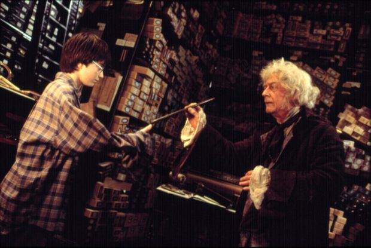
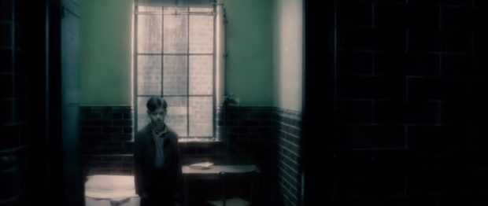
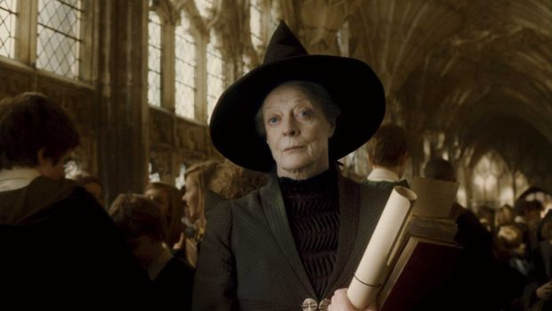
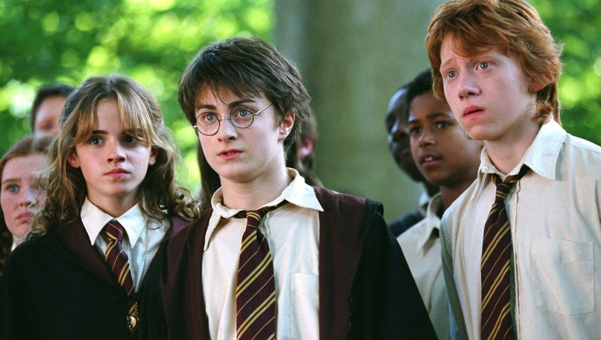
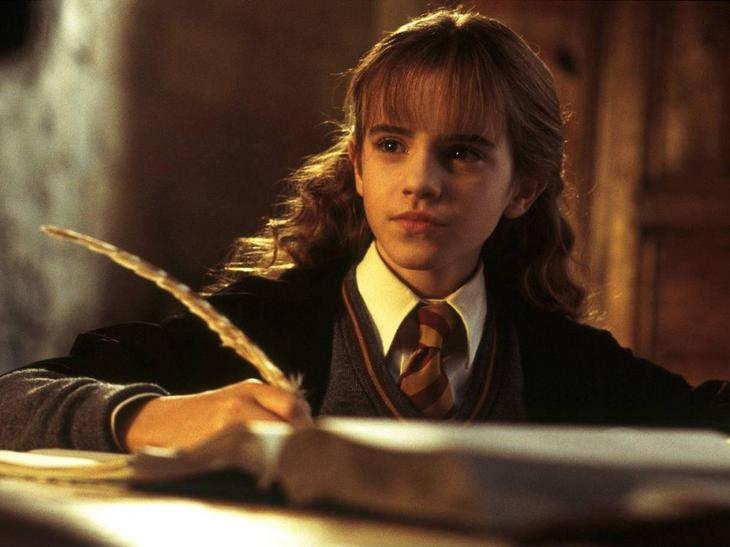

| ГЛАВНАЯ | О САЙТЕ |
Киновселенная Гарри Поттера объединяет миллионы поклонников во всём мире. Со временем интерес к ней не угасает, тем более, что вселенная стала пополнятся новыми фильмами, которые к самому Мальчику-который — выжил прямого отношения уже не имеют, но погружают зрителя в ту же самую чарующую атмосферу мира магии и волшебства. Так что для всех фанатов серии мы собрали самые любопытные факты про фильмы о Гарри Поттере.
«Гарри Поттер» — это не просто самая популярная серия книг и фильмов, которая принесла своей создательнице огромное состояние. Джоан Роулинг смогла создать по-настоящему волшебный мир, в который переносились читатели, а создатели фильма и актерский состав постарались максимально приближенно перенести историю о мальчике, который вышел на большие экраны.
В своих интервью писательница раскрывала небольшие секреты, которые касались истории создания или возможного развития сюжета. Актеры делились интересными и забавными случаями, происходившими во время съемок.
1. Волшебная палочка Гарри менялась
За время съемок Поттерианы Даниэл Рэдклифф использовал не менее 80 палочек, потому что продолжал носить их с собой всё время.
В среднем, для всех основных персонажей было сделано по 6 палочек, однако для Дэниела Рэдклиффа пришлось сделать около 80, потому что он, например, использовал их в качестве палочек для барабана, выстукивая ритмы на разных поверхностях. Справедливости ради, в итоге актёр признавался, что ему было очень стыдно за свое безответственное отношение к реквизиту.
2. Волан-де-Морт «в молодости» и «в настоящем» действительно родственники
Хиро Файнс-Тиффин, актер, исполнивший роль юного Волан-де-Морта в фильме «Принц-полукровка», оказался родным племянником Рэйфа Файнса, воплотившего образ Волан-де-Морта после его возвращения.
По словам Дэвида Йейтса, решающее значение сыграли не семейные связи. «Это было преимуществом, что он обладает внешним сходством с Рэйфом, но Хиро получил эту роль из-за его удивительной способности перевоплощаться в молодого Тома Реддла на экране», — рассказывал Йейтс в интервью USA Today в 2008 году.
3. Профессор Макгонагалл страдала от рака
Актриса Мэгги Смит, бессменная исполнительница роли профессора Макгонагалл, во время съемок «Принца-полукровки» проходила курс лечения от рака молочной железы.
Хотя актриса и проходила химиотерапию в период съемок, она отказалась позволить ей прекратить играть профессора Макгонагалл: «Я была лысой, зато было удобно носить парик. Я была похожа на вареное яйцо, — рассказывала актриса в интервью изданию Times. — Последние несколько лет были серьезным испытанием, хотя теперь я начинаю ощущать себя человеком. Мои силы восстанавливаются, но мне приходится собирать себя по частям».
4. Узник Азкабана
Фильм стал поворотным в том смысле, что режиссер первых двух частей покинул проект. Вместо него был назначен Альфонсо Куарон. Он был известен своим нестандартным подходом к съемочному процессу. Например, постановщик дал указание трем главным актерам написать эссе автобиографического характера от имени Гарри, Рона и Гермионы. Рэдклифф и Уотсон свое задание выполнили, в то время, как Руперт Грин отказался. Когда режиссер спросил актера, почему он не станет писать эссе, тот ответил, что Рон на его месте никогда бы этого не сделал. За это он получил похвалу Куарона, который сказал, что Грин хорошо чувствует характер своего персонажа. К сожалению, накануне съемок преждевременно ушел из жизни Ричард Харрис — исполнитель роли Дамблдора. Его место занял другой ирландский актер — Майкл Гэмбон. На эту роль был большой спрос благодаря успеху серии. Одним из кандидатов был Кристофер Ли. Также роль предлагали Иэну МакКеллену, однако он отказался, аргументируя свой поступок тем, что уже играл волшебника Гэндальфа в экранизации «Властелина колец». Интересно, что и Кристофер Ли там же был чародеем Саруманом. Еще одной несостоявшейся рокировкой стало приглашение занять место режиссера Гильермо Дель Торо. Именитый постановщик решил взяться за другой проект — «Хэллбой». В итоге был приглашен Альфонсо Куарон. Другие интересные факты про актеров Гарри Поттера — в том, что именно в «Узнике» появилось несколько важных новых персонажей. Например, крестный отец чародея Сириус Блэк. Его сыграл знаменитый Гэри Олдмен, известный по таким лентам 90-х, как «Дракула» и «Леон». Но на этом не заканчиваются интересные факты о фильме «Гарри Поттер и Узник Азкабана». Также здесь появился Римус Люпин – профессор по защите от Темных Искусств. Роль доверили Дэвиду Тьюлису. Самое забавное — это то, что он уже пытался попасть в «поттериаду» во время кастинга на первый фильм. Тогда он пробовался на место профессора Квиррела, однако место досталось Яну Харту. И вот спустя несколько лет Тьюлис все-таки оказался в проекте, при этом получив роль более важного и долгоживущего персонажа. В фильме появляется деревня Хогсмид, куда студенты отправляются на выходные. Она была снята в местечке Готленд, в Северном Йоркшире.
5. Эссе о главных героях
Режиссер Куарон решил проверить, насколько хорошо исполнители главных ролей понимают своих персонажей. И молодые люди приятно удивили его. Эмма Уотсон написала 16-страничное творение в лучших традициях своей героини, Дэниел Рэдклифф сдал работу на небольшом листочке, а Руперт Грин и вовсе не стал писать эссе.
Эти и другие факты можно прочитать по ссылке.
Также можете ознакомиться с фактами по другим франшизам: